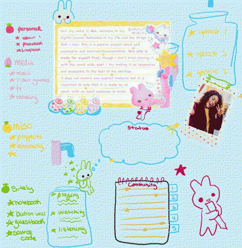

been meaning to do this for a while so let's get to it! questions are from mouseling.net.
1. Please introduce yourself.
hai i'm des. a 25 year old from Puerto Rico who's a computer science student and enjoys having fun.
2. How long have you been making websites?
i've been at it since april 2023.
3. And what got you into the hobby?
i am pretty sure that i was just bored out of my ass one night and decided to create a neocities account. the rest is history.
4. What kind of website are you most interested in?
personal websites! blog websites. anything that can tell me what the person behind the screen is like.
5. What's your workflow? Do you plan your websites out thoroughly or do you come up with the design as you go along?
i basically need to have a general idea of how the design will be from the start. i usually do sketches of how i want a layout to look like with a said color palette and some pictures for inspirations. once i start coding, the process usually takes me to places where the initial sketch of the layout looks VERY different from the final product.
you can see an example of this in this sketch made for my current homepage.

you can clearly see that the idea is still the same but it's still very different from the final product!
6. Please link to your biggest inspirations.
basically everything i have ever seen and interacted with inspires me. i get my inspiration from random stuff i see in real life (like some piece of clothing that with a nice color palette) to random websites i stumble upon on the web. i have MANY inspirations but here's some websites that have inspired me as of late:
7. What's your favourite part about making websites?
i really fuck with CSS ngl and i think it's fun. besides that, just the thought of creating something from the ground up that is 100% me is also very nice.
8. And the thing you struggle with the most?
i think making a website with a backend is something that i have struggled bc i don't even know where to begin! but i've never done that to actively struggle with it... so... i guess i can say here that i do struggle with making more complex interactive things with JS though i also find that very fun to do / figure out.
9. Do you keep the same layout on all of your pages? Or do you use different ones?
if you are this deep into doqmeat.com reading this then you know the answer to this one! i think i just like learning new things and experimenting with the stuff i learn. i have some websites that share a layout across all pages. for doqmeat, i basically treat this place as my playground. i just find it too boring to keep the same layout across all pages.
10. How confident are you with CSS?
pretty confident! i know my way around CSS media queries to make a page responsive as well as a flexbox and grid layout. also pseudo-classes are fucking awesome.
11. Do you know how to correctly use <dl>?
i guess? if i remember correctly this is a definition list but i have never used these HTML tags before.
12. What is your favourite HTML element?
<details> is pretty goated.
13. If you're making a new web page from scratch, what is the first thing you do?
create a CSS file and add a * rule where the box-sizing gets set to border box instead of content box.
14. Do you know JavaScript?
through osmosis via C++. the syntax is very similar so that helps me out a lot. though i have been learning quite a bit via my small projects such as the walkman mp3 player and a silly page i did for my girlfriend where you have to make two fish kiss.
15. How about PHP?
I REALLY WANNA LEARN PHP so a site of mine can have a proper backend with a database. so no, i don't know it yet but i am currently taking a class called databases so hopefully i will be learning PHP pretty soon.
16. Does your website have a theme that you stick to?
not really tbh.
17. Are you more focused on content or design?
i feel like both. maybe... it depends on what page im at.
18. Do you own a domain name? If not, would you ever want to?
yes. i own 3 domains. doqmeat.com, sepiarecord.net, and desteny.me
19. What do you think of nostalgia-focused or "retro" websites?
22. What do you think of button walls in particular?
exactly. i love them.
23. If you started over again, would you make something similar or completely different?
i think different! recently i learned how to use Static Site Generatos like 11ty and because of how my site is structured (files and such), it would be a pain in the ass to try to build doqmeat.com through a SSG despite the inmmense time that it would save me for pages that have repeating layouts like my journal and music page. if i did this site from scratch, i would probably have to change my workflow and stuff and that's a lot. i don't really see myself starting doqmeat.com from 0, but that is how i would go about it if i did.
i downloaded it for my very first computer science class (at the time i was using brackets) and i eventually made it my home to edit my website in
27. Do you host your image files on your web server, or on another host?
HOST YOUR IMAGES IN YOUR OWN SERVER PLEASEEEEEEE. if i have a pet peeve is when people host the images on their sites on random file sharing sites like file garden or catbox or DISCORD???? to answer the question: i host them on the same server.
28. This might not be relevant to you, but what's your opinion on the Neocities vs. Nekoweb debate?
it's not that i don't care but idk why there's even a debate in the first place. they are both communities of the same thing. though i will say that it is nice all the features that nekoweb has been getting in comparison to neocities. but again, i don't see the point in debating which one is better.
29. How much server space would you estimate your main website takes up?
i think last time i checked it was 300mbs? so yeah around that.
30. Do you keep local backups of your files?
i work on my site locally and then push to git and that's how i update my site.
31. Do you prefer simple or highly visual websites?
both!!!!! i love both. while my site is heavy on the visual side, i think there is a lot of beauty in a simplistic site and i am often inspired by them.
32. Do you stick to certain colours? Do you do that on purpose, or is it your subconscious?
i think yes... i think? i rarely use dark colors.
33. Have you ever thought about quitting? Why?
not really. i'm not really focused on getting stuff out frequently so i think that helps with not feeling burnt out. i touch this site whenever i want to work on it and that's it! sometimes i have stuff to say on my journal. sometimes i have an idea for something silly i wanna do. but i don't really care if i'm not updating my site as much.
34. Do you have many webmaster friends, or is it a solitary hobby?
yes!!! i am working on my social skills but i do have people around my web circle that i consider my friends! and no, i don't think this is a solitary hobby. i mean it can be for sure! but it is very much a community-centric hobby and i really like that part of the indie web.
35. Do people in your real life know about your website?
yes! many...
36. Do you update your website very often? How often is "very often"?
kind of answered on question 33! i think every month i give it an update though.
37. And the overall design, do you change that much? Why or why not?
depends on the page! if i feel like something is outdated / need better code / i have a better design in mind for it then i will change it. if not then i won't change it.
38. Is your website more you-focused, hobby-focused, or outside world-focused?
me-focused 100% nowadays. it's also very hobby-focused but i don't have a lot of time to update those pages! outside-world focused? i'm not really sure what this means but i think maybe a little bit.
39. Do you do web design professionally?
this is the goal lowkey. i think it would be neat since i have done commissions before.
40. If not, would you like to? And if you're comfortable answering, what do you do for work?
i'm in retail hell right now but also lowkey unemployed. i don't get a lot of shifts.
41. Do you communicate with people by email very much?
YES!!!! i love e-mail very much! send me an email @ meow@doqmeat.com
42. Some people reject social media and use websites as a replacement. Do you keep social media outside of your website?
yessss. i understand the rejection but just like everything, you have to Know how to use it. i am only active on bluesky and twitter
43. How about instant messengers? Do you use a mainstream one like Discord or Telegram? Or something like Matrix? Do you avoid them?
i am an e-mail truther. i would only share my discord with close online friends since i'm not that great with conversations.
44. Do you listen to music while you work on websites? If so, what kinds of artists?
yes. i mostly play new albums i haven't heard so any artist goes.
45. Do you keep everything you make on one website, or do you have more than one?
i have more than one! you can see them all at sepiarecord.net, which is a collective of my sites and projects.
46. On a similar note, do you keep to one topic on your site, or many?
many.
47. Do you present your real self, or at least try? Or do you construct a persona on purpose?
i try to present my real self. how i type and write on my blogs is basically how i talk to friends irl. i don't really try to keep it professional here. but at the end of the day, my website is the presentation of myself that i put on the internet, so some stuff of myself will get filtered out in that process. but i don't put up a persona. i am a bit of a freak irl too.
48. Have you ever made a good friend thanks to your website?
actually yes!!! someone at my uni saw my website and approached me saying they really liked it. and because of that person i got to meet many many many other people.
49. Are you happy with the way HTML and CSS currently work?
i think so yeah. i don't have anything to say about HTML. CSS could do a bit more things to make me happy, but there is always JS to save the day.
50. What are practices that you think people should avoid?
100 divs followed by another 100 divs
51. What about under-utilised practices, or things you think people should do more?
CSS media queries! not only for phones, but also for people that don't have very wide screens. it's also just nice to have your page be responsive.
52. Do you use a lot of semantic HTML? Or are you guilty of generic structure?
last year i started using a lot of semantic HTML!
53. Do you consider different browsers?
yess i check my sites on chromes and i make them on firefox.
54. Speaking of, what's your preferred browser? Convince your readers why they should use it.
firefox. i can't really convince anyone to use firefox since their CEO said some bs about AI and they are implementing some AI stuff into the browser. i am simply too lazy to switch and i don't even know to WHAT browser. everything sucks.
55. And what OS are you on?
windows 11
56. Do you have a strong opinion on that, or do you just happen to use it?
windows sucks and linux scary. at least to install it on my laptop that i do EVERYTHING on. though i know my way around a terminal so. maybe i'll get there one day idk.
57. Are your websites mobile-friendly?
i try to make them so!
58. What are your thoughts on autoplay?
i think it's cool as long as its like am ambient tune or something like that. don't blast me your favorite rock song please.
59. What are your thoughts on webrings? Are you in any?
yesss i love webrings and fanlistings. and also list in general. i'm not gonna plug them all here but all of them are on my homepage.
60. Do you have any web shrines? What do you like to see in that sort of page?
i have one for my cat mizu! in shrines i want to know everything that is unknown to me.
61. Are your websites "cliche", in your opinion?
i don't even know what this implies. i guess? i know when u see my site you WILL know it is being hosted on neocities.
62. What is your ideal website? Are you striving for that, or for something else?
my ideal website... i'm not really sure! i think im pretty satisfied with what my site has become though.
63. Are you an artist? Do you draw or design your own assets?
eh not really? i draw a little bit. and sometimes i make some simple assets. but most of my assets are taken from other resource websites.
64. What are your favourite resource sites?
possibly w3schools, is it outdated? yes and i dont really use it anymore but if it wasn't for that site i would NOT be here. other than that, petrapixel has a ton of resources that i go to. at least when it comes to coding. for assets and graphics i own sites like ditherit.com probably $100 from how much i use them for my assets and such.
65. Is there a habit you just can't get away from no matter how hard you try?
i think the fact that i hand-code my CSS instead of using libraries and such. i just like it too much. my bad. also i don't really know how to use libraries like that.
66. What's your biggest advice for a new webmaster?
learn to use git, and a nice code editor for your site.
host your images on the server you are using.
have fun. it's not that serious.
67. Do you keep all your styling in CSS? Or do you hard-code some?
CSS... i try to not do inline CSS.
68. What do you think of frameset layouts?
annoying and i say this I USE THEM AND I KNOW. but if you know what you're doing it does work.
69. How about table-based layouts?
crazy but i'm not the one behind them so!
70. Do you subscribe to the ideas of "one-column", "two-column" and "three-column" layouts? Do you use any of these?
i do! all of my layouts for my homepage are basically column layouts.
71. Do you spend longer on the HTML or the CSS?
what kind of mad man spends more time on the HTML than the CSS?
72. Have you ever made a page with no CSS? It's useful for your thoughts.
i have but only temporary. again, i fuck with CSS a little bit too much.
73. Do you ever find yourself making layouts with nothing to put on them? Or do you only make layouts when the need arises?
yes! when i make layouts for fun i just release them as templates for anyone to use.
74. Would you consider yourself a beginner? Or advanced? Somewhere in the middle?
i am def somewhere in the middle.
75. Do you have a habit of looking at the source code of websites you visit?
yes! i am always very curious of how other people code their sites and what they use. btw to all webmasters: don't disable right clicking pretty please i LOVE looking at your source code.
76. How did YOU learn how to make websites?
through templates! i didn't know anything about HTML or CSS so i grabbed templates and edited them until i was able to make my own from scratch! the first page i did from scratch was my safe-spot #fun-fact. which i have to update so let me put that on my to-do list.
77. Do you ever force elements to do things they're not supposed to?
probably... though i can't think of an example at the moment.
78. Thoughts on floating elements?
i use it for images only. for other stuff it gets annoying.
79. When you're sizing stuff, what do you use first? Do you use px, em, %, or something else?
i always go for em for fonts and then pixels and % for the rest of the stuff.
80. Do you have a favourite font?
yesss i love gaegu a lor and my new favorite as of late is dotgothic16.
81. Would you run a website with another person? How would that work?
yes! don't know how it would work but i would be up for it!
82. Do you surf the Web to find new personal websites very often?
not as often as i would love to, but i do partake on the activity! i love browsing the web.
83. Do you bookmark other people's websites? How would you feel knowing someone else bookmarked yours?
yess. i often bookmark sites i want to spent more time on. i think it would feel awesome to know someone bookmarked mine.
84. What do you want people to be most impressed with when they see your website?
the bullshit i be doing to my CSS file maybe.
85. Are you interested in technology outside of websites? Do you collect?
yes! well... in a way i guess? but i love my electronics. i don't really collect them.
86. How often and for how long are you online?
on my free days i try to be online for a bit. i mostly disappear when i have a lot going on at my uni.
87. When it comes to your website, who is your target audience?
people around my age. other freaks like me hopefully. but i think really anyone. i don't post any nsfw on my site but i do curse a lot here. but it is def not intended for kids.
88. Have you ever been interested in XHTML?
i don't even know what that is!
89. Do you program in general? Have you ever written a program for use with or on your website, not counting simple JavaScript?
this is one of my goals! not sure what i would make though, but the idea sounds pretty neat!
90. Speaking of programs that help you make websites, what do you think of static site generators (SSGs)? Have you ever used one?
not really. i would love to participate more of 32bit.cafe though
93. Do you write your page content directly into the editor, or do you prepare it elsewhere, like a text document or a Word document?
directly into the editor.
94. Do you think you appear cool to others? A more accurate answer now: do other people ever say you're cool?
i do not wanna know what other people think of me. i prefer inner peace. but i have been told y a couple of people that they really life my site and that im a goat. #testimonials
95. Are you embarrassed of your old work? Have you ever deleted everything out of shame?
eh not really. at least content wise i always have in mind that the things i'm putting here are VERY public despite me being a nobody. so this way i prevent myself from posting stuff i would regret down the line.
96. Would you close down your website if you couldn't update it, or would you leave an archive?
leave an archive! i don't get why people close their websites whem they can't update them anymore.
97. Do you reveal a lot about yourself on your website? Or are you more secretive?
honestly i think i do reveal quite a lot. no locations of course. but i do live in a small island so it's really whatever to me. say hi to me if you see me around.
98. Are you willing to reveal who your best online friend is, and/or if they have a website?
my best online friends are a little friend group (called the effñicks) i made around 2019 and we all keep in touch via discord! there's another friend that i am very close to which i've kept in touch since 2013! none of them have sites though :p
99. And do you optimise the images on your website?
YES. i love compressing my imgs and dithering them.
100. We're out of time! How do you feel after answering 100 questions? ....other than exhausted.
i can't believe i did this in one sitting tbh... i feel okay! gonna get going now though. bye!